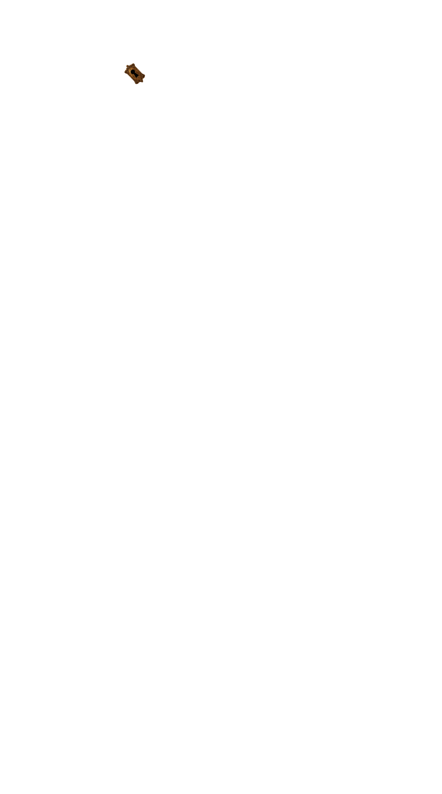
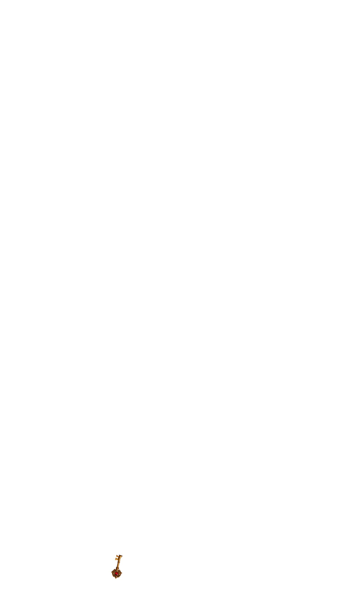

👑
Pass & Play
Offline Multiplayer
👥
2 Players
Two players on the same device
›
👥
3 Players
Three players on the same device
›
👥
4 Players
Four players on the same device
›


🗝️
Hello
SECRET CHAMBER
CLOSE
Game Paused
▶ Resume
🏠 Main Menu
🏆
You Win!
✦ ✦ ✦
▶ Play Again